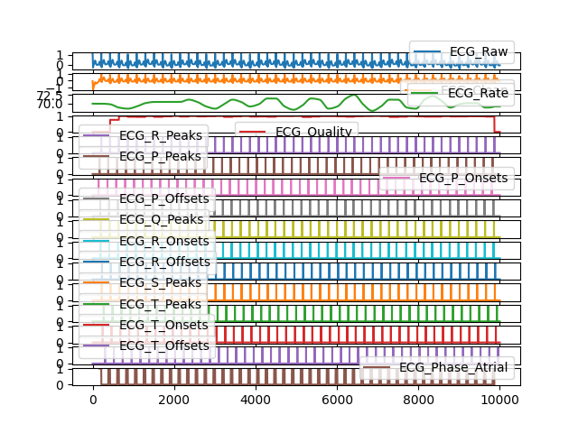

Bio
Contents
Bio#
Main#
bio_process()#
- bio_process(ecg=None, rsp=None, eda=None, emg=None, ppg=None, eog=None, keep=None, sampling_rate=1000)[source]#
Automated processing of bio signals
Wrapper for other bio processing functions of electrocardiography signals (ECG), respiration signals (RSP), electrodermal activity (EDA) and electromyography signals (EMG).
- Parameters
data (DataFrame) – The DataFrame containing all the respective signals (e.g., ecg, rsp, Photosensor etc.). If provided, there is no need to fill in the other arguments denoting the channel inputs. Defaults to None.
ecg (Union[list, np.array, pd.Series]) – The raw ECG channel.
rsp (Union[list, np.array, pd.Series]) – The raw RSP channel (as measured, for instance, by a respiration belt).
eda (Union[list, np.array, pd.Series]) – The raw EDA channel.
emg (Union[list, np.array, pd.Series]) – The raw EMG channel.
ppg (Union[list, np.array, pd.Series]) – The raw PPG channel.
eog (Union[list, np.array, pd.Series]) – The raw EOG channel, extracted from
mne_channel_extract().()keep (DataFrame) – Dataframe or channels to add by concatenation to the processed dataframe (for instance, the Photosensor channel).
sampling_rate (int) – The sampling frequency of the signals (in Hz, i.e., samples/second). Defaults to 1000.
- Returns
bio_df (DataFrame) – DataFrames of the following processed bio features:
”ECG”: the raw signal, the cleaned signal, the heart rate, and the R peaks indexes. Also generated by
ecg_process().”RSP”: the raw signal, the cleaned signal, the rate, and the amplitude. Also generated by
rsp_process().”EDA”: the raw signal, the cleaned signal, the tonic component, the phasic component, indexes of the SCR onsets, peaks, amplitudes, and half-recovery times. Also generated by
eda_process().”EMG”: the raw signal, the cleaned signal, and amplitudes. Also generated by
emg_process().”PPG”: the raw signal, the cleaned signal, rate and peaks. Also generated by
ppg_process().”RSA”: Respiratory Sinus Arrhythmia features generated by
ecg_rsa(), if both ECG and RSP are provided.”EOG”: the raw signal, the cleaned signal, the indexes of EOG blinks, and the blink rate.
bio_info (dict) – A dictionary containing the samples of peaks, troughs, amplitudes, onsets, offsets, periods of activation, recovery times of the respective processed signals, as well as the signals’ sampling rate.
See also
ecg_process,rsp_process,eda_process,emg_process,ppg_process,eog_processExample
In [1]: import neurokit2 as nk # With Simulated Data In [2]: ecg = nk.ecg_simulate(duration=40, sampling_rate=250) In [3]: rsp = nk.rsp_simulate(duration=40, sampling_rate=250) In [4]: eda = nk.eda_simulate(duration=40, sampling_rate=250, scr_number=3) In [5]: emg = nk.emg_simulate(duration=40, sampling_rate=250, burst_number=5) In [6]: bio_df, bio_info = nk.bio_process(ecg=ecg, rsp=rsp, eda=eda, emg=emg, eog=None, ...: sampling_rate=250) ...: In [7]: bio_df Out[7]: ECG_Raw ECG_Clean ECG_Rate ... EMG_Offsets RSA_P2T RSA_Gates 0 1.090904 -0.072187 70.057084 ... 0 0.012 7.920872 1 1.037346 -0.197546 70.057084 ... 0 0.012 7.920872 2 0.898523 -0.335953 70.057084 ... 0 0.012 7.920872 3 0.701041 -0.491983 70.057084 ... 0 0.012 7.920872 4 0.473280 -0.662511 70.057084 ... 0 0.012 7.920872 ... ... ... ... ... ... ... ... 9995 -0.099894 -0.040324 68.181818 ... 0 0.056 7.980021 9996 -0.097401 -0.037424 68.181818 ... 0 0.056 7.980021 9997 -0.094431 -0.034184 68.181818 ... 0 0.056 7.980021 9998 -0.090949 -0.030670 68.181818 ... 0 0.056 7.980021 9999 -0.086989 -0.026999 68.181818 ... 0 0.056 7.980021 [10000 rows x 46 columns] # Visualize all signals In [8]: fig = nk.standardize(bio_df).plot(subplots=True)
# With Actual Data In [9]: eog = nk.data('eog_100hz') In [10]: data = nk.data('bio_eventrelated_100hz')[:len(eog)] In [11]: bio_df2, bio_info2 = nk.bio_process(ecg=data['ECG'], rsp=data['RSP'], eda=data['EDA'], ....: emg=None, eog=eog, keep=data['Photosensor'], sampling_rate=100) ....: In [12]: bio_df2 Out[12]: ECG_Raw ECG_Clean ECG_Rate ... Photosensor RSA_P2T RSA_Gates 0 -0.015869 0.001499 61.486770 ... 5.0 0.09 8.372153 1 -0.011703 0.004621 61.486770 ... 5.0 0.09 8.372153 2 -0.009766 0.005260 61.486770 ... 5.0 0.09 8.372153 3 -0.013321 0.004423 61.486770 ... 5.0 0.09 8.372153 4 -0.009583 0.005670 61.486770 ... 5.0 0.09 8.372153 ... ... ... ... ... ... ... ... 11995 -0.078903 -0.100016 70.588235 ... 5.0 0.06 8.547471 11996 -0.070740 -0.089212 70.588235 ... 5.0 0.06 8.547471 11997 -0.062714 -0.077518 70.588235 ... 5.0 0.06 8.547471 11998 -0.052139 -0.065251 70.588235 ... 5.0 0.06 8.547471 11999 -0.045425 -0.054046 70.588235 ... 5.0 0.06 8.547471 [12000 rows x 45 columns] # Visualize all signals In [13]: fig2 = nk.standardize(bio_df2).plot(subplots=True)
{kind=link}
{kind=link}
bio_analyze()#
- bio_analyze(data, sampling_rate=1000, method='auto', window_lengths='constant')[source]#
Automated analysis of physiological signals
Wrapper for other bio analyze functions of electrocardiography signals (ECG), respiration signals (RSP), electrodermal activity (EDA), electromyography signals (EMG) and electrooculography signals (EOG).
- Parameters
data (DataFrame) – The DataFrame containing all the processed signals, typically produced by
bio_process(),ecg_process(),rsp_process(),eda_process(),emg_process()oreog_process(). Can also be an epochs object.sampling_rate (int) – The sampling frequency of the signals (in Hz, i.e., samples/second). Defaults to 1000.
method (str) – Can be one of ‘event-related’ for event-related analysis on epochs, or ‘interval-related’ for analysis on longer periods of data. Defaults to ‘auto’ where the right method will be chosen based on the mean duration of the data (‘event-related’ for duration under 10s).
window_lengths (dict) – If ‘constant’ (default), will use the full epoch for all the signals. Can also be a dictionary with the epoch start and end times for different types of signals, e.g., window_lengths = {‘ECG’: [0.5, 1.5], ‘EDA’: [0.5, 3.5]}
- Returns
DataFrame – DataFrame of the analyzed bio features. See docstrings of
ecg_analyze(),rsp_analyze(),eda_analyze(),emg_analyze()andeog_analyze()for more details. Also returns Respiratory Sinus Arrhythmia features produced byhrv_rsa()if interval-related analysis is carried out.
See also
ecg_analyze,rsp_analyze,eda_analyze,emg_analyze,eog_analyzeExamples
In [1]: import neurokit2 as nk # Example 1: Event-related analysis ================================================== # Download data In [2]: data = nk.data("bio_eventrelated_100hz") # Process the data In [3]: df, info = nk.bio_process(ecg=data["ECG"], rsp=data["RSP"], eda=data["EDA"], ...: keep=data["Photosensor"], sampling_rate=100) ...: # Build epochs around photosensor-marked events In [4]: events = nk.events_find(data["Photosensor"], threshold_keep='below', ...: event_conditions=["Negative", "Neutral", ...: "Neutral", "Negative"]) ...: In [5]: epochs = nk.epochs_create(df, events, sampling_rate=100, epochs_start=-0.1, ...: epochs_end=1.9) ...: # Analyze In [6]: nk.bio_analyze(epochs, sampling_rate=100) Out[6]: Label Condition Event_Onset ... SCR_RecoveryTime RSA_P2T RSA_Gates 1 1 Negative 1024 ... NaN 0.012143 0.000000 2 2 Neutral 4957 ... NaN -0.001503 0.072881 3 3 Neutral 9224 ... NaN -0.003509 0.056925 4 4 Negative 12984 ... NaN 0.002043 -0.056213 [4 rows x 43 columns] # Example 2: Interval-related analysis ================================================= # Download data In [7]: data = nk.data("bio_resting_5min_100hz") # Process the data In [8]: df, info = nk.bio_process(ecg=data["ECG"], rsp=data["RSP"], ppg=data["PPG"], sampling_rate=100) # Analyze In [9]: nk.bio_analyze(df, sampling_rate=100) Out[9]: ECG_Rate_Mean HRV_MeanNN ... RSA_Gates_Mean_log RSA_Gates_SD 0 86.392105 694.756381 ... 2.046078 0.156442 [1 rows x 202 columns]